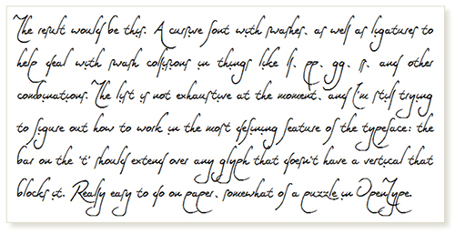
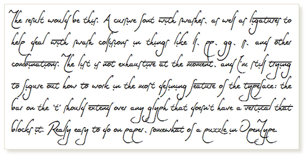

Font preview - you type text, the webpage styles it for you. Using webfont with-ligature-CSS technology.
Preview:
This is a prototype font, created using FontCreator 7.5, with -gg, -ll, -pp, and other ligatures.
Still drastically lacking: carried overbar when a "t" is used:
 vs. 